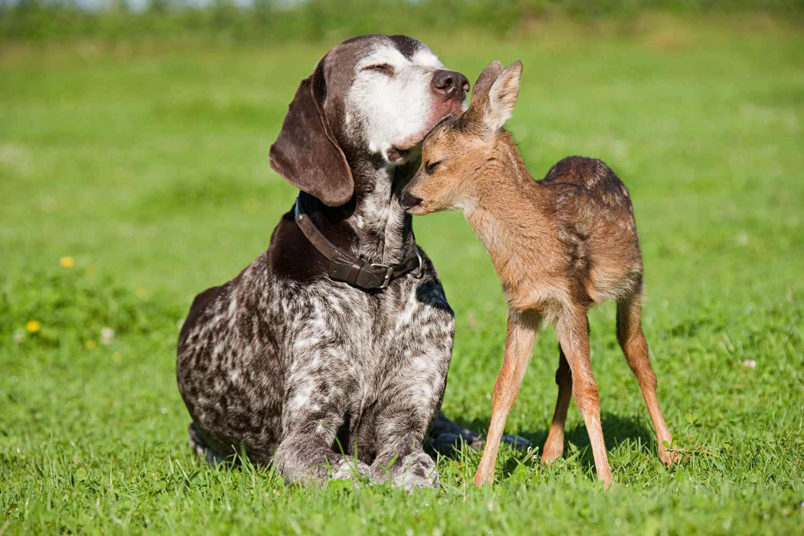
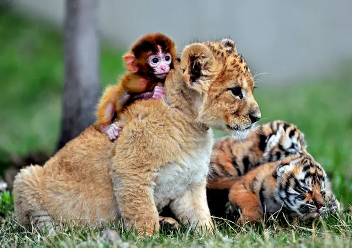

How can you Get Involved
Getting Educated
Friends of Animals has been a leading figure in the movement to end the exploitation of fur-bearing animals and has a long history of activism regarding animals in entertainment—organizing protests against fur retailers, circuses, rodeos, bullfighting and more. We also oppose hunting and animal-killing contests and have successfully worked with many communities to convince them to cancel mass kill plans for Canada geese, black bears, deer and other wildlife perceived as problems. In addition, we help individuals adapt their behaviors so they can be better neighbors to all wildlife.
While our legal victories for animals are crucial, so are such educational outreach efforts. We offer several educational brochures covering everything from the plight of America’s wild horses and human overpopulation to living with coyotes and why cat declawing is cruel.
If you’d like to learn more about a specific topic of animal rights, click on each brochure below. If you’d like to help educate your own communities by purchasing and sharing our brochures with others, click here
Living The Vegan Life
Friends of Animals opposes the use of animals for human consumption for moral and ecological reasons.
Advertising campaigns that try to make the public believe the grisly business of turning fish, birds and mammals into food can be done in a “humane” fashion send the wrong message. Whether nonhuman animals are reared intensively or “free-range,” their lives are completely controlled and then brutally ended, and profit is what matters most to those who own them.
Incremental improvements pushed by some welfare-oriented animal advocacy groups do not alleviate animals’ suffering; they are geared to assuage our own consciences so that people continue to eat animals (including fish), thinking that somebody else has addressed the morality issue.
Being vegan also goes beyond what is on your plate. Respect for animals factors into clothing decisions and other consumer items, such as “cruelty-free” makeup, cleaners and toiletries.
Being vegan is not only good for animals, it also benefits the environment. Livestock supply chains account for 14.5% of all human-induced greenhouse emissions each year. That’s about the same amount of emissions from all airplanes, ships, trucks and cars combined.


